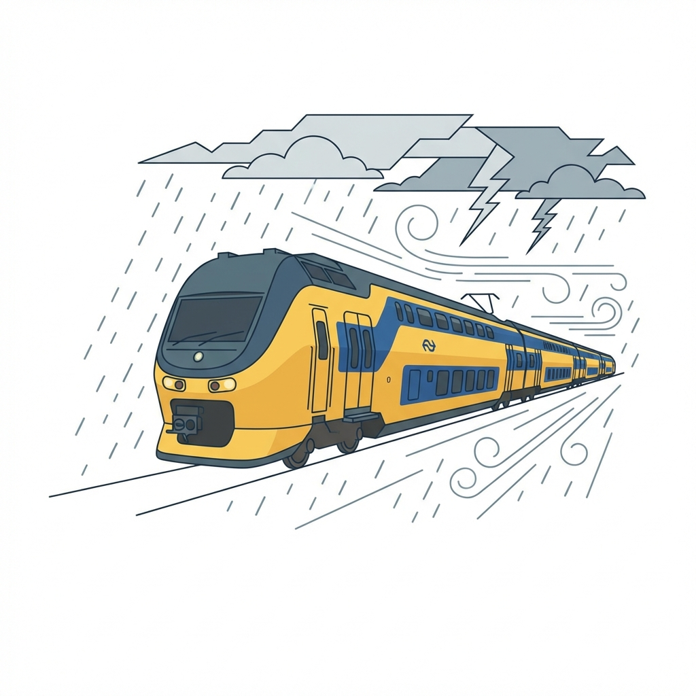
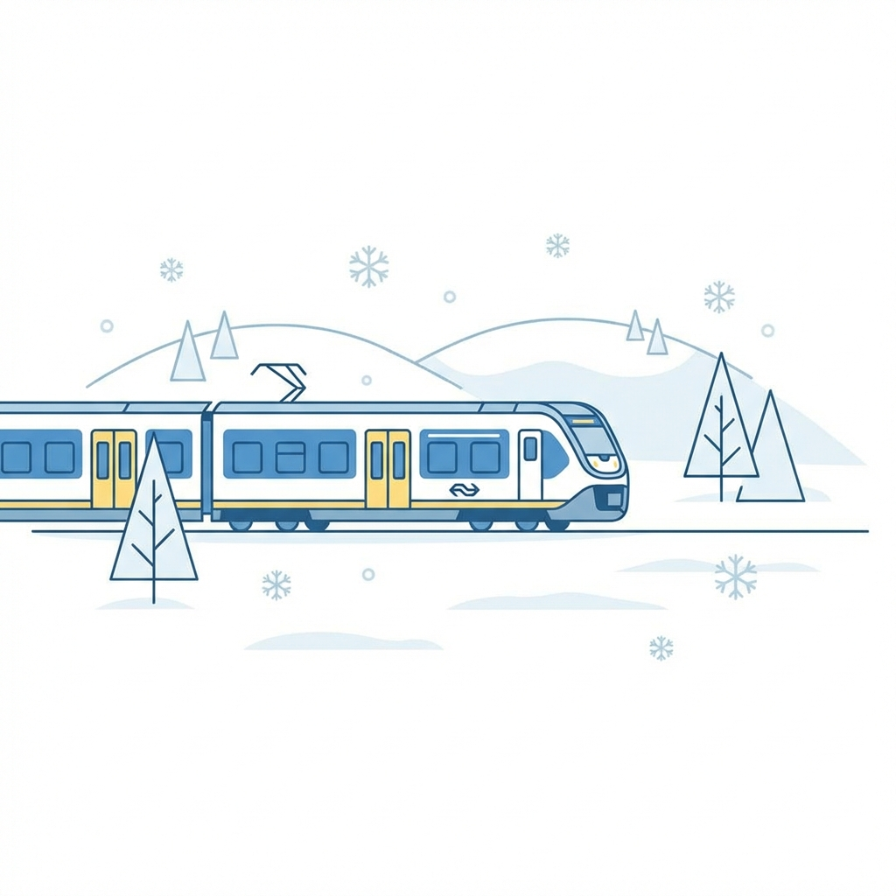

Introductie

Extreme weersomstandigheden zoals sneeuw en storm hebben een disproportionele impact op de dienstregeling. Dit project kwantificeert deze relatie door historische NS-ritdata te koppelen aan KNMI-weergegevens.
Vraagstelling
Wat is de correlatie tussen neerslag en vertraging?
Welke trajecten zijn het meest gevoelig voor wind?
Hoe beïnvloedt sneeuw de totale uitval?
Methodologie
- Data: NS API (ritten) + KNMI (weer).
- Clean: GPS-mapping stops naar weerstations.
- Model: 3NF Relational Schema (zie rechts).
- SQL: Aggregatie op `type` en `traject`.
Data Model (ERD)
Genormaliseerd (3NF)SELECT w.type, AVG(s.vertraging_vertrek) FROM stop s JOIN station st ON s.station = st.id JOIN location l ON st.locatie = l.id JOIN weer w ON w.locatie = l.id AND DATE(s.vertrek) = DATE(w.tijd) GROUP BY w.type;
Resultaten

Conclusie
Sneeuw is de "Killer". Terwijl regen lineaire vertragingen geeft, zorgt sneeuw voor exponentiële uitval door wisselstoringen.
Advies: Preventief uitdunnen is de enige effectieve strategie bij Code Rood.